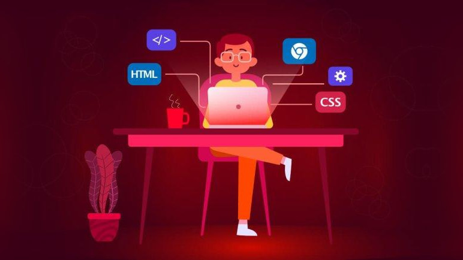
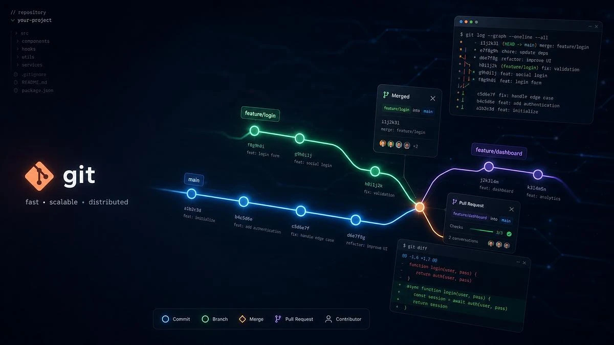

<section aria-label="Publicaciones destacadas">
      <div id="featuredCarousel" class="carousel slide carousel-fade hero-carousel" data-bs-ride="carousel" data-bs-pause="false">
        <div class="carousel-indicators">
          <button type="button" data-bs-target="#featuredCarousel" data-bs-slide-to="0" class="active" aria-current="true" aria-label="Diapositiva 1"></button>
          <button type="button" data-bs-target="#featuredCarousel" data-bs-slide-to="1" aria-label="Diapositiva 2"></button>
          <button type="button" data-bs-target="#featuredCarousel" data-bs-slide-to="2" aria-label="Diapositiva 3"></button>
        </div>
        <div class="carousel-inner">
          <div class="carousel-item active" data-bs-interval="6000">
            
            
            <div class="carousel-caption">
              <span class="badge text-bg-accent mb-2">Ecosistema RollingCode</span>
              <h2>Protagonistas 360 de la revolución del software</h2>
              <p class="mb-3">Una compañía de tecnología que une una academia EdTech, un estudio de ingeniería de software y un laboratorio de innovación de productos.</p>
              <a href="../../about.html#ecosystem" class="btn btn-primary">Conocé el ecosistema <i class="bi bi-arrow-right ms-1" aria-hidden="true"></i></a>
            </div>
          </div>
          <div class="carousel-item" data-bs-interval="6000">
            
            
            <div class="carousel-caption">
              <span class="badge text-bg-accent mb-2">RollingCode School</span>
              <h2>Aprendé programación desde cero</h2>
              <p class="mb-3">Más de 6.200 egresados ya dieron sus primeros pasos en el mundo del software. Te contamos por dónde empezar.</p>
              <a href="../../post-getting-started.html" class="btn btn-primary">Leer la guía <i class="bi bi-arrow-right ms-1" aria-hidden="true"></i></a>
            </div>
          </div>
          <div class="carousel-item" data-bs-interval="6000">
            
            
            <div class="carousel-caption">
              <span class="badge text-bg-accent mb-2">Herramientas</span>
              <h2>Git y GitHub sin miedo</h2>
              <p class="mb-3">Los comandos que vas a usar todos los días para guardar tu trabajo y colaborar en equipo.</p>
              <a href="../../post-git-github.html" class="btn btn-primary">Ver más <i class="bi bi-arrow-right ms-1" aria-hidden="true"></i></a>
            </div>
          </div>
        </div>
        <button class="carousel-control-prev" type="button" data-bs-target="#featuredCarousel" data-bs-slide="prev">
          <span class="carousel-control-prev-icon" aria-hidden="true"></span>
          <span class="visually-hidden">Anterior</span>
        </button>
        <button class="carousel-control-next" type="button" data-bs-target="#featuredCarousel" data-bs-slide="next">
          <span class="carousel-control-next-icon" aria-hidden="true"></span>
          <span class="visually-hidden">Siguiente</span>
        </button>
      </div>
    </section>